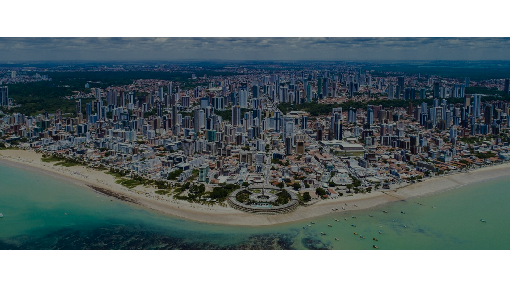

Descubra a beleza cativante de João Pessoa, onde a natureza e a cultura se fundem em uma experiência única. Conhecida como a cidade onde o sol nasce primeiro nas Américas, João Pessoa é abençoada com praias de areias douradas e águas cristalinas que convidam a relaxar e a se encantar. Em João Pessoa, cada esquina revela uma nova surpresa, seja através da culinária regional, da música ao vivo ou da calorosa hospitalidade de seus habitantes. Explore essa joia do Nordeste brasileiro e deixe-se encantar por sua diversidade e charme incomparáveis.
Através de iniciativas de conservação e promoção do patrimônio cultural e natural da região, JAMPA Turismo busca não apenas proteger os locais de interesse turístico, mas também fomentar o desenvolvimento econômico sustentável das comunidades locais. Ao preservar esses pontos turísticos, a organização não só mantém viva a identidade e história da região, mas também cria oportunidades de emprego e geração de renda para os residentes locais, promovendo assim um ciclo virtuoso de crescimento econômico e bem-estar social. Além disso, JAMPA Turismo trabalha em estreita colaboração com autoridades locais, empresas e comunidades para desenvolver estratégias inovadoras que promovam o turismo responsável e sustentável, garantindo que as belezas naturais e culturais da região sejam apreciadas pelas gerações presentes e futuras."
